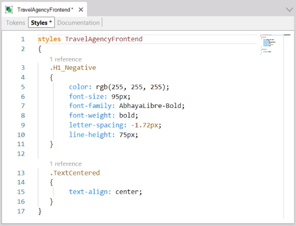
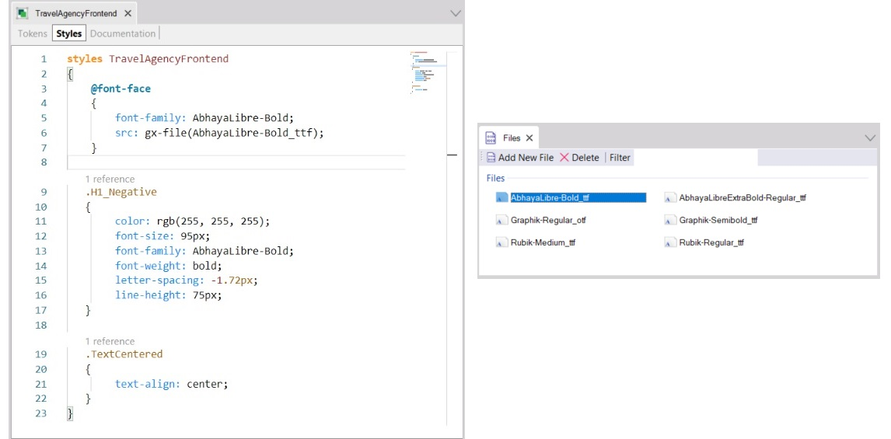

To define all the Classes that will be used to style the controls of your application, a GeneXus object named Design System is available.
That will be the centralized location to store all the design definitions. Then you will only need to associate it with the objects of your Knowledge Base that you want to be based on it. It could be all of them, those of a module, or some of them in particular.
Now, create a Design System Object with what you have so far, and associate it with your Web Panel (and all the others):

Note that at first the definition of classes doesn't seem any different from the definition of class selectors in a CSS. In fact, it will be possible to copy and paste from a CSS directly to this editor. All the properties and their possible values are supported.
However, there will be an extended set of properties, because some of them will be specific to GeneXus. They start with the prefix “gx-” and are known as gx-properties. It will not be discussed here, because this is just an introduction to the subject.
Also, for now the focus is only on web objects. If they were native mobile, everything referred to CSS would not apply; even though the properties would be almost the same in most cases, there would also be specific ones (because of the native platform itself). You will not need two different Design System objects: you can use the same one.
Continuing with this example, if you look closely, the font-family AbhayaLibre-Bold is missing because it isn’t a standard family. To this end, add a rule that allows including new fonts (it matches the CSS rule to do the same):

A File object with the font must have been added in the Knowledge Base, and there you need to use the gx-file function to specify the source of the font you are declaring.
In the same way, you will have the gx-image function to associate an image object of the Knowledge Base with a property. For example, if you have an image object named chatbot in your KB and you want to specify it as the background image in a class, inside that class you could write this assignment:
background-image: gx-image(chatbot);
Since GeneXus 17 Upgrade 6.
| Backlinks |
| Toc:Design Systems |